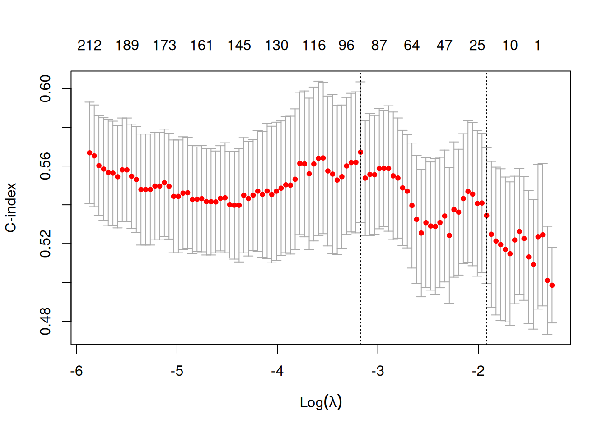
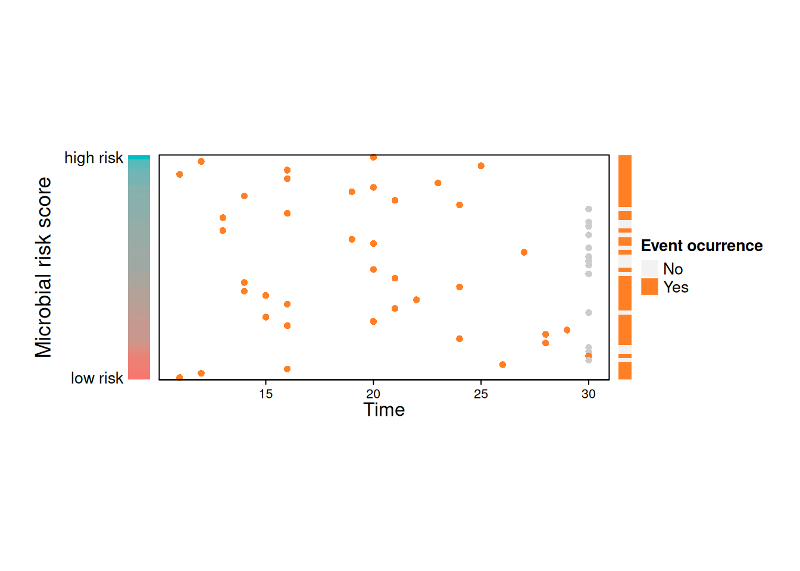
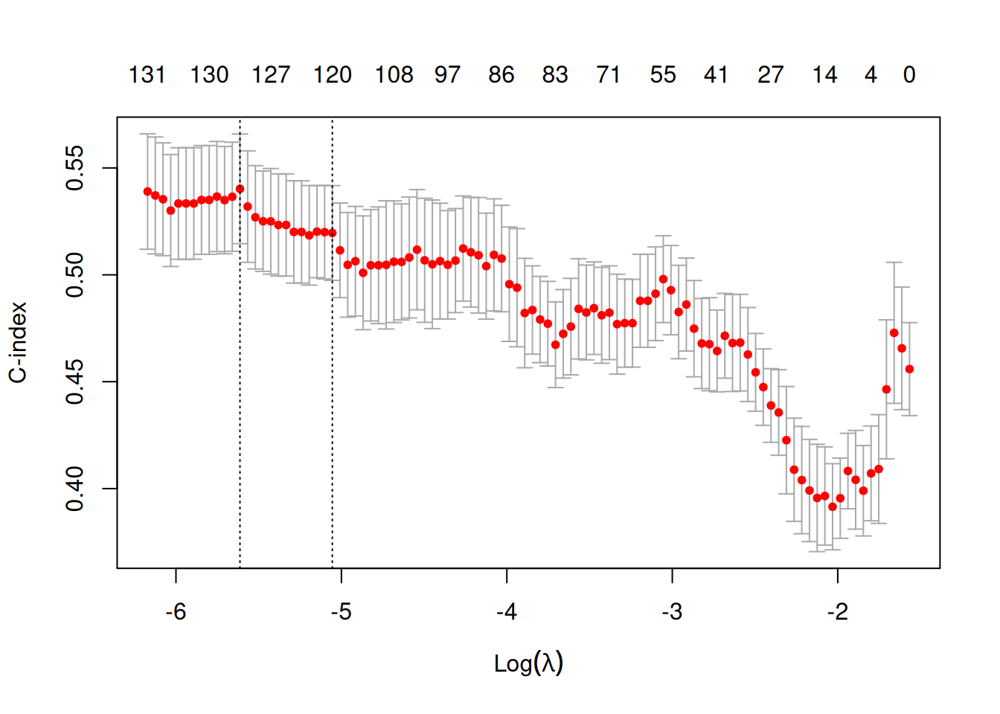
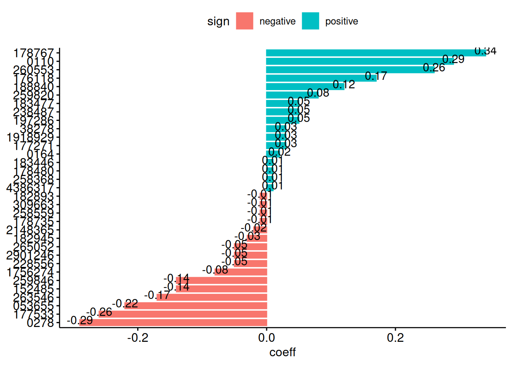

library(mia)
library(ggplot2)
library(lattice)
library(TreeSummarizedExperiment)
library(coda4microbiome)
library(SummarizedExperiment)
library(tibble)
library(phyloseq)
library(survival)
library(survival)TreeSE_Coxmodel.qmd
This report focuses on evaluating the predictive performance of the Cox proportional hazards model under transformed and un-transformed data. The primary objective is to identify which transformation method allows the Cox model to yield the most accurate survival predictions. By systematically applying distinct transformations to the data-set and assessing the model’s performance, this study aims to provide insights into optimizing data pre-processing for survival analysis.
Load libraries
link to download the biom.Rdata dataset: https://github.com/wg99526/MiSurvGit/tree/main/Data
load("~/Desktop/Microbiome_Analysis/TreeSE/biom.Rdata")convert phyloseq object to TreeSE
tse <- convertFromPhyloseq(biom)Transform the data
coef_threshold = 0
lambda = "lambda.1se"
nvar = NULL
alpha = 0.9
nfolds = 10
showPlots = TRUE
x1 <- impute_zeros(assay(tse))
x1 <- t(x1)
kselect <- ncol(x1)
taxaselect <- (1:ncol(x1))
lrmatrix <- logratios_matrix(x1)
lrX <- lrmatrix[[1]]
idlrX <- lrmatrix[[2]]split the data into training and testing subsets
# Set seed for reproducibility
set.seed(123)
# Split TreeSE into training and test sets by samples (columns)
num_samples <- ncol(tse)
train_indices <- sample(seq_len(num_samples), size = floor(0.7 * num_samples))
test_indices <- setdiff(seq_len(num_samples), train_indices)
# Subset TreeSE
tse_train <- tse[, train_indices]
tse_test <- tse[, test_indices]Prepare training data
# Extract colData
col_data_train <- as.data.frame(colData(tse_train))
x <- t(assay(tse_train))
# Extract time-to-event and status from colData
time <- col_data_train$T1Dweek # numeric vector
status <- col_data_train$T1D # binary vector (0 = censored, 1 = event)
covars <- col_data_train[, c("Antibiotics", "Sex")] # update with correct column names
# Assuming lrX is a matrix or data frame with columns
num_rows <- nrow(lrX)
split_point <- floor(0.7 * num_rows)
lrX_train <- lrX[1:split_point, ]
# Replace row names with only digits extracted from original row names
rownames(x) <- gsub("\\D", "", rownames(x))
colnames(x) <- gsub("\\D", "", colnames(x))Prepare testing data
#prepare the testing subset
col_data_test <- as.data.frame(colData(tse_test))
# Extract time-to-event and status from colData
time_test <- col_data_test$T1Dweek # numeric vector
status_test <- col_data_test$T1D # binary vector (0 = censored, 1 = event)
covars_test <- col_data_test[, c("Antibiotics", "Sex")] # update with correct column names
# Extract abundance matrix (assumes 1st assay)
x_test <- t(assay(tse_test)) # transpose: rows = samples, columns = features
lrX_test <- lrX[(split_point + 1):num_rows, ]
# Replace row names with only digits extracted from original row names
rownames(x_test) <- gsub("\\D", "", rownames(x_test))
colnames(x_test) <- gsub("\\D", "", colnames(x_test))implement cox model
set.seed(123)
y_test = Surv(time_test, status_test)# Cox response variable (time & status)
y = Surv(time, status)# fits a standard Cox proportional hazards model (coxph) using all covariates
df0 <- data.frame(as.matrix(y), covars)
model0 <- coxph(Surv(time, status) ~ ., data = df0)
x0 <- predict(model0)#linear predictor
#Penalized Cox Model with Offset
cvfit <- glmnet::cv.glmnet(lrX_train, y, family = "cox",
type.measure = "C",
nfolds = nfolds, alpha = alpha,
keep = TRUE,
offset = x0)
plot(cvfit)
predictions<-as.numeric(predict(cvfit, lrX_test, s = lambda, newoffset=x0))
Cindex_signature <- glmnet::Cindex(pred = predictions, y_test)Generate plot for transformed data
rowlasso <- max(which(cvfit$glmnet.fit$df <= nvar))Warning in max(which(cvfit$glmnet.fit$df <= nvar)): no non-missing arguments to
max; returning -Inflambdavalue <- lambda
if (is.character(lambda)) {
if (lambda == "lambda.1se")
lambdavalue <- cvfit$lambda.1se
if (lambda == "lambda.min")
lambdavalue <- cvfit$lambda.min
}
idrow <- max(which(cvfit$glmnet.fit$lambda >= lambdavalue))
coeflr <- as.vector(coef(cvfit, s = lambda)) #[-1]
lrselect <- which(coeflr != 0)
coeflogcontrast <- rep(0, ncol(x))
for (i in (1:length(coeflr))) {
coeflogcontrast[idlrX[i, 1]] <- coeflogcontrast[idlrX[i,1]] + coeflr[i]
coeflogcontrast[idlrX[i, 2]] <- coeflogcontrast[idlrX[i,2]] - coeflr[i]
}
varlogcontrast <- which(abs(coeflogcontrast) > coef_threshold)
coeflogcontrast <- coeflogcontrast[varlogcontrast]
(names.select <- colnames(x)[varlogcontrast]) [1] "228556" "197286" "4386317" "178735" "1756274" "152485" "053655"
[8] "258368" "178767" "263546" "177271" "238487" "176118" "260553"
[15] "258559" "309663" "259820" "2901246" "2148365" "1918929" "178480"
[22] "0278" "177533" "182945" "38278" "182893" "183477" "259846"
[29] "188840" "0164" "0110" "183446" "265052" (sign <- ifelse(coeflogcontrast > 0, 1, 0)) [1] 0 1 1 0 0 0 0 1 1 0 1 1 1 1 0 0 1 0 0 1 1 0 0 0 1 0 1 0 1 1 1 1 0sign <- factor(sign, levels = c(0, 1), labels = c("negative",
"positive"))
#predictions<-x0+logcontrast
coeflogcontrast<-2*coeflogcontrast/sum(abs(coeflogcontrast))
mcvCindex <- cvfit$cvm[idrow]
sdcvCindex <- cvfit$cvsd[idrow]
plot1<-NULL
plot2<-NULL
if (length(lrselect>0)){
plot1 <- plot_riskscore(predictions, x_test, time_test, status_test, showPlots = showPlots)
plot2 <- plot_signature(names.select, coeflogcontrast, showPlots = showPlots)
} else {
print("No variables are selected. The risk score plot and the signature plot are not displayed.")
}
implement cox model on un-transformed
set.seed(123)
# fits a standard Cox proportional hazards model (coxph) using all covariates
df0 <- data.frame(as.matrix(y), covars)
model1 <- coxph(Surv(time, status) ~ ., data = df0)
x0 <- predict(model1)#linear predictor
#Penalized Cox Model with Offset
cvfit1 <- glmnet::cv.glmnet(x, y, family = "cox",
type.measure = "C",
nfolds = nfolds, alpha = alpha,
keep = TRUE,
offset = x0)
plot(cvfit1)
predictions1<-as.numeric(predict(cvfit1,x_test,s=lambda, newoffset=x0))
Cindex_signature <- glmnet::Cindex(pred = predictions1, y_test)Generate plots for untransformed
rowlasso <- max(which(cvfit$glmnet.fit$df <= nvar))Warning in max(which(cvfit$glmnet.fit$df <= nvar)): no non-missing arguments to
max; returning -Inflambdavalue <- lambda
if (is.character(lambda)) {
if (lambda == "lambda.1se")
lambdavalue <- cvfit$lambda.1se
if (lambda == "lambda.min")
lambdavalue <- cvfit$lambda.min
}
idrow <- max(which(cvfit$glmnet.fit$lambda >= lambdavalue))
coeflr <- as.vector(coef(cvfit, s = lambda))
lrselect <- which(coeflr != 0)
coeflogcontrast <- rep(0, ncol(x))
for (i in (1:length(coeflr))) {
coeflogcontrast[idlrX[i, 1]] <- coeflogcontrast[idlrX[i, 1]] + coeflr[i]
coeflogcontrast[idlrX[i, 2]] <- coeflogcontrast[idlrX[i, 2]] - coeflr[i]
}
varlogcontrast <- which(abs(coeflogcontrast) > coef_threshold)
coeflogcontrast <- coeflogcontrast[varlogcontrast]
names.select <- colnames(x)[varlogcontrast]
sign <- ifelse(coeflogcontrast > 0, 1, 0)
sign <- factor(sign, levels = c(0, 1), labels = c("negative", "positive"))
mcvCindex <- cvfit1$cvm[idrow]
sdcvCindex <- cvfit$cvsd[idrow]
plot1 <- NULL
plot2 <- NULL
if (length(lrselect) > 0) {
plot1 <- plot_riskscore(predictions, x_test, time_test, status_test, showPlots = showPlots)
plot2 <- plot_signature(names.select, coeflogcontrast, showPlots = showPlots)
} else {
print("No variables are selected. The risk score plot and the signature plot are not displayed.")
}
Evaluate model performance on transformed and un-transformed data
# Set seed for reproducibility
set.seed(123)
# Define the models and their corresponding test matrices
models <- list(
transformed = list(model = model0, cvfit = cvfit, x_test = lrX_test, x_train = lrX),
untransformed = list(model = model1, cvfit = cvfit1, x_test = x_test, x_train = x)
)
# Prepare result containers
cindex_results <- list() # Stores the point estimate of the C-index for each model
cindex_bootstrap <- list() # Stores the bootstrap-based statistics for each model
# Set number of bootstrap replicates
n_boot <- 1000
# Loop through each model type: 'transformed' and 'untransformed'
for (type in names(models)) {
cat("\n--- Testing:", type, "---\n")
# Extract the model and data for the current type
current_model <- models[[type]]$model
current_cvfit <- models[[type]]$cvfit
current_x_test <- models[[type]]$x_test
# Identify complete cases (no missing values in covariates, test data, or survival outcome)
complete_cases <- complete.cases(covars_test) &
complete.cases(current_x_test) &
!is.na(time_test) & !is.na(status_test)
# Subset testing data based on complete cases
covars_test_clean <- covars_test[complete_cases, , drop = FALSE]
x_test_clean <- current_x_test[complete_cases, , drop = FALSE]
time_test_clean <- time_test[complete_cases]
status_test_clean <- status_test[complete_cases]
# Predict linear predictors using covariates-only model (for use as offsets)
x0_test_clean <- predict(current_model,
newdata = as.data.frame(covars_test_clean),
type = "lp")
# Predict risk scores using penalized Cox model with offset
lambda_value <- current_cvfit$lambda.min
test_predictions <- predict(current_cvfit,
newx = x_test_clean,
s = lambda_value,
newoffset = x0_test_clean,
type = "link")
# Flip sign for correct direction of risk (higher score = higher risk)
test_predictions <- -as.numeric(test_predictions)
# Compute point estimate of Harrell's C-index
test_cindex <- glmnet::Cindex(pred = test_predictions,
y = Surv(time_test_clean, status_test_clean))
cindex_results[[type]] <- test_cindex
# Perform bootstrap to estimate confidence interval of C-index
boot_cindex <- numeric(n_boot)
for (b in 1:n_boot) {
idx <- sample(seq_along(time_test_clean), replace = TRUE) # sample with replacement
boot_cindex[b] <- glmnet::Cindex(pred = test_predictions[idx],
y = Surv(time_test_clean[idx], status_test_clean[idx]))
}
# Store bootstrap statistics
cindex_bootstrap[[type]] <- list(
mean = mean(boot_cindex),
ci = quantile(boot_cindex, probs = c(0.025, 0.975)), # 95% confidence interval
all = boot_cindex # full vector of bootstrapped C-index values
)
# Print results
cat("Samples used:", length(time_test_clean), "\n")
cat("C-index:", round(test_cindex, 4), "\n")
cat("Bootstrap 95% CI:", round(cindex_bootstrap[[type]]$ci[1], 4), "-", round(cindex_bootstrap[[type]]$ci[2], 4), "\n")
}
--- Testing: transformed ---
Samples used: 52
C-index: 0.4437
Bootstrap 95% CI: 0.324 - 0.557
--- Testing: untransformed ---
Samples used: 52
C-index: 0.5389
Bootstrap 95% CI: 0.4389 - 0.6353